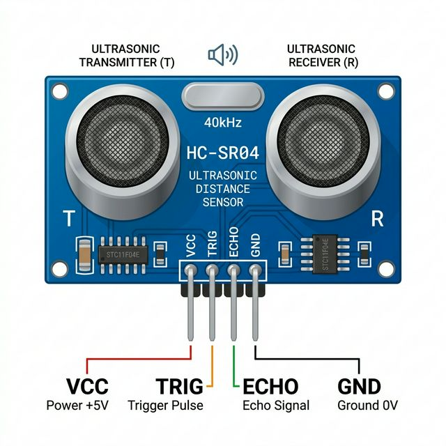

The HC-SR04 is an ultrasonic ranging module that provides 2cm to 400cm non-contact measurement functionality with a ranging accuracy that can reach up to 3mm.

This sensor operates on the same principle as a bat's echolocation (sonar):
TRIG pin.ECHO pin HIGH instantly, and waits for the sound waves to bounce off an object and return to the Receiver (the right metallic cylinder).ECHO pin LOW. By measuring how long the ECHO pin stayed HIGH, your Arduino code can calculate the exact distance using the speed of sound.| Pin | Function |
|---|---|
| VCC | Power supply. Connect to Arduino 5V. |
| TRIG | Trigger Input. Arduino pulses this line HIGH for 10µs to trigger a ping. |
| ECHO | Echo Output. Sensor pulls this HIGH while the sound pulse is traveling. |
| GND | Common ground connection. |
During a running simulation, a dark floating control panel with a slider will appear beneath the HC-SR04 module. Use this slider to manually adjust the virtual distance (in centimeters) between the sensor and an imaginary object. Your Arduino code will instantly measure the new distance.
Because the sensor relies on precise timing of a high-speed pulse, we use the Arduino's built-in pulseIn() function to measure the duration of the ECHO pulse.
// Define the pins connected to the sensor
const int trigPin = 9;
const int echoPin = 10;
// Variables for calculation
long duration;
int distanceCm;
void setup() {
pinMode(trigPin, OUTPUT); // Sets the trigPin as an Output
pinMode(echoPin, INPUT); // Sets the echoPin as an Input
Serial.begin(9600); // Starts the serial communication
Serial.println("HC-SR04 Ready!");
}
void loop() {
// Clears the trigPin
digitalWrite(trigPin, LOW);
delayMicroseconds(2);
// Sets the trigPin HIGH for 10 micro-seconds
digitalWrite(trigPin, HIGH);
delayMicroseconds(10);
digitalWrite(trigPin, LOW);
// Reads the echoPin, returns the sound wave travel time in microseconds
duration = pulseIn(echoPin, HIGH);
// Calculating the distance
// Speed of sound wave divided by 2 (go and back)
distanceCm = duration * 0.034 / 2;
// Prints the distance on the Serial Monitor
Serial.print("Distance: ");
Serial.print(distanceCm);
Serial.println(" cm");
delay(100); // Short delay before next ping
}